原生表单部件(原生：原本自带的——一开始就有的）
任务目标：
- 要了解在浏览器中可以使用什么类型的原生表单小部件来收集数据，以及如何使用HTML实现它们。
通用属性
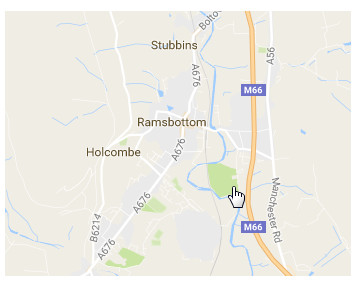
autofucus：只有一个元素可用的自动聚焦。
diabled：不可用。(输入值不会发送)
name：提交用。表示这个表单输入框的名字（后台能接收到的变量名），用于和服务器交互或者编写js时方便引用。name可重复，id不可以！
value：默认值，此属性是可选的，除非type 属性是radio或checkbox（必选）。表示提交过去变量的值，用于JS交互操作和显示文本。
PS：
spellcheck属性是HTML5 规范的一部分，它添加了对输入、textarea 元素和可编辑文本字段的拼写检查。主要针对一些无法识别的词语提供熟悉的红色波形曲线。
spellcheck属性仅 textarea、input（非密码） 元素或者标记为 contentEditable 的元素并且支持HTML5的浏览器有效。语法如下：
<input type="text" spellcheck="value"><textarea spellcheck="value">
<div contenteditable="true" spellcheck="value"></div>
value:
true //用拼写检查。false //不用拼写检查
//如果属性缺失，则从父元素继承拼写检查。
1、文本输入域
文本域通用属性
1、readonly (只读，不可改) readonly或 readonly="readonly"
2、disabled (不可用，输入值不会发送) disabled或disabled="disabled"
3、maxlength：用户最多可以输入的字符个数，优先maxlength，大于小于size没关系。
minlength:
<input type="text" id="name" name="name" required
minlength="4" maxlength="8" size="10">
4、size：控件大小（值必须大于0，默认20）。type = text 或 password时为字符个数，对于其他类型，size 属性定义的是以像素为单位的输入字段宽度，推荐使用 CSS 代替：<input style="width:100px" />！。
5、placeholder：占位符，提示文字。
单行文本域<input>
●单行文本域：type="text"是默认值也是备用值（例如浏览器不兼容type="date"时）。
●E-mail 地址域：type="email"，客户端浏览器验证错误格式。
●密码域：type="password"，表面安全的暗文。
●搜索域：type="search"，圆角加“”x“”，值可自动保存到同一站点。
●电话号码域：type="tel"，在语义和个别移动设备上有差异。
●URL 域：type="url"，客户端浏览器验证。
PS：
当type="radio"：单选按钮，或="checkbox"： 复选框。必须使用 value 属性定义这两个控件被提交时的值。使用 checked 属性指示控件是否被选择。
多行文本域<textarea>
<textarea></textarea>：<textarea>元素里的内容都会变成文本。大多数浏览器，多行文本域在右下角可调整大小，关闭使用CSS设置文本区域的resize为 none 。
<textarea>的属性：cols：文本域的宽度，rows：文本行数，wrap：指定文本换行的方式，默认soft,wrap="soft"文本到最大宽度时不自动换行。hard自动换行。
2、下拉内容
下拉选择框（select box）
<select>：下拉选择框。

<select>的multiple属性允许多选。
<label for="multi">
<span>anyway:</span>
</label>
<select id="multi" name="multi">
<option value="Banana">Banana</option>
<option value="Cherry">Cherry</option>
<option value="Lemon">Lemon</option>
</select>

<option>：显示可选值，<option>的selected属性（已选择属性）设置默认值。
<optgroup>：可选值分组。
<select id="groups" name="groups">
<optgroup label="fruits">
<option>Banana</option>
<option selected>Cherry</option>
<option>Lemon</option>
</optgroup>
<optgroup label="vegetables">
<option>Carrot</option>
<option>Eggplant</option>
<option>Potato</option>
</optgroup></select>
<form>
<p>
<label for="groups">
Choose:
</label>
<select id="groups" name="groups">
<optgroup label="fruits">
<option>Banana</option>
<option selected>Cherry</option>
<option>Lemon</option>
</optgroup>
<optgroup label="vegetables">
<option>Carrot</option>
<option>Eggplant</option>
<option>Potato</option>
</optgroup>
</select>
</p>
</form>
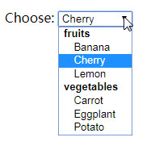
自动补全输入框（autocomplete box也是下拉内容）
●<datalist>：为表单控件提供建议的、自动完成的值。（IE10以下不支持）
●<option>：显示可选值。
●list属性（通常是<input>的）：文本域属性，绑定数据列表到文本域（ 通过datalist的id）。
<label for="myFruit">What's your favorite fruit?</label>
<input type="text" name="myFruit" id="myFruit" list="mySuggestion">
<datalist id="mySuggestion">
<option>Apple</option>
<option>Banana</option>
<option>Blackberry</option>
<option>Blueberry</option>
<option>Lemon</option>
<option>Lychee</option>
<option>Peach</option>
<option>Pear</option>
</datalist>
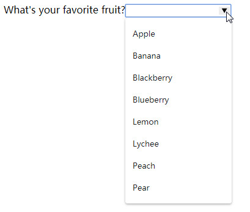
兼容版本的<datalist>：
<label for="myFruit">What is your favorite fruit? (With fallback)</label>
<input type="text" id="myFruit" name="fruit" list="fruitList">
<datalist id="fruitList"> <!--不兼容浏览器忽略-->
<label for="suggestion">or pick a fruit</label> <!--兼容浏览器忽略-->
<select id="suggestion" name="altFruit"> <!--兼容浏览器忽略-->
<option>Apple</option>
<option>Banana</option>
<option>Blackberry</option>
<option>Blueberry</option>
<option>Lemon</option>
<option>Lychee</option>
<option>Peach</option>
<option>Pear</option>
</select>
</datalist> <!--不兼容浏览器忽略-->
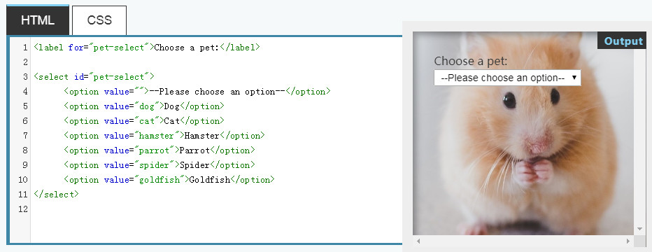
3、可选中项（Checkable items）
表单提交时，即使控件没有任何值，所有具有name属性的控件都会被发送。而可选中项：勾选时才发送值，不勾选连name都没有。
checked属性（已勾选属性）：默认选中。
复选框（勾选框Check box）

<input type="checkbox" checked id="carrots" name="carrots" value="carrots">
单选按钮（老式收音机按钮Radio button）
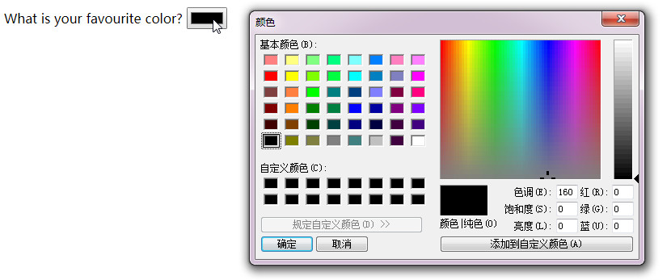
<input type="radio" checked id="soup" name="meal">
<fieldset>
<legend>What is your favorite meal?</legend>
<ul>
<li>
<label for="soup">Soup</label>
<input type="radio" checked id="soup" name="meal" value="soup">
</li>
<li>
<label for="curry">Curry</label>
<input type="radio" id="curry" name="meal" value="curry">
</li>
<li>
<label for="pizza">Pizza</label>
<input type="radio" id="pizza" name="meal" value="pizza">
</li>
</ul>
</fieldset>

4、按钮
三种按钮类型：
- submit（提交表单到服务器）
- reset（重设默认值）
- button（默认值，可用JS定制）
<button>元素或<input>元素创建，指定type属性的值。
submit
<button type="submit">
This a <br><strong>submit button</strong></button>
<input type="submit" value="This is a submit button">
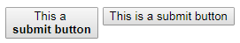
reset
<button type="reset">
This a <br><strong>reset button</strong></button>
<input type="reset" value="This is a reset button">
button
<button type="button">
This an <br><strong>anonymous button</strong></button>
<input type="button" value="This is an anonymous button">
区别：<button>元素允许HTML内容和文本内容（不是空元素，HTML内容和文本内容作为value属性）， <input>元素只允许文本内容（空元素，必须添加value属性作为默认值）。
高级表单部件
（IE基本不支持）
数字（IE10以下不支持）
<input type="number">
属性：min、max和step
<input type="number" name="age" id="age" min="1" max="10" step="2">
min和max属性
step属性：步长（一步走多远）
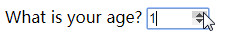
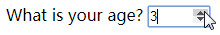
滑块（IE10以下不支持）
<input type="range">
属性：min、max和step
不提供任何形式的视觉反馈来了解当前值，需要JS！
<label for="beans">How many beans can you eat?</label>
<input type="range" name="beans" id="beans" min="0" max="500" step="10">
<span class="beancount"></span>
<script>
var beans = document.querySelector('#beans');
var count = document.querySelector('.beancount');
count.textContent = beans.value;
beans.oninput = function() {
count.textContent = beans.value;
}
</script>
将span的textContent设置为输入的当前value。设置一个oninput事件处理程序，每次移动范围滑块，都将span textContent更新为新输入值。

日期时间选择器（IE、Safari和Firefox不支持）
日期<input type="date">
min、max属性
<label for="myDate">When are you available this summer?</label>
<input type="date" name="myDate" min="2013-06-01" max="2013-08-31" id="myDate">
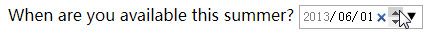
本地时间<input type="datetime-local">
<label for="meet">When shall we have the meeting?</label>
<input type="datetime-local" name="meet" id="meet">
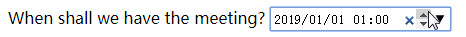
月<input type="month">
<label for="month">What month is your favorite?</label>
<input type="month" name="month" id="month">

星期<input type="week">
<label for="week">What week is your favorite?</label>
<input type="week" name="week" id="week">
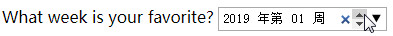
时间<input type="time">
<label for="time">Set the time for your wifi fridge</label>
<input type="time" name="time" id="time">

拾色器<input type="color">（IE、Safari不支持）
<label for="color">What is your favourite color?</label>
<input type="color" name="color" id="color">

其他小部件
文件选择器<input type="file">
accept属性：接受的文件类型
multiple属性：选择多个文件
<label for="file">Choose an image to upload</label>
<input type="file" name="file" id="file" accept="image/*" multiple>

隐藏内容<input type="hidden">
用表单发送的数据，但不显示给用户
<input type="hidden" id="timestamp" name="timestamp" value="1286705410">
图像按钮<input type="image">
这个小部件不会提交它的值
<input type="image" name="pos" alt="" src="map.png">

仪表和进度条<progress>和<meter>（IE不支持）
<progress>（进度条百分比显示）
<progress max="100" value="75">75/100</progress>

<meter>
较低部分：值是在min<?<=low。
平均部分：值是在low<?<high。
优先部分：值是在high<?<=max。
使用了low和high属性时，optimum指明哪一个取值范围是更好的。
1、（密码强度、电池电量）
<meter min="0" max="100" value="67" low="33" high="66" optimum="67">67</meter>
当optimum在绿色区域的时候，value也在绿色区域的时候，整个就会呈现出绿色
当optimum在绿色区域的时候，value值在黄色区域的时候，整个就会呈现出黄色
当optimum在绿色区域的时候，value值在红色区域的时候，整个就会呈现出红色

2、
当optimum在绿色区域的时候，valu值在中间绿色区域是为绿色
当optimum在绿色区域的时候，value值在min和low之间和在high和max之间时都呈现出黄色

<meter min="0" max="100" value="75" low="33" high="66" optimum="50">75</meter>

3、
当optimum在绿色区域的时候，value也在绿色区域的时候，整个就会呈现出绿色
当optimum在绿色区域的时候，value值在黄色区域的时候，整个就会呈现出黄色
当optimum在绿色区域的时候，value值在红色区域的时候，整个就会呈现出红色

扩展：
占位文本(PlaceHolder)是指当一个文本框没有被focus的时候显示的是提示文字。不能包含回车或换行，会被忽略。
占位符就是先占住一个固定的位置，等着你再往里面添加内容的符号，用于幻灯片上，就表现为一个虚框，虚框内部往往有“单击此处添加标题”之类的提示文字，一旦鼠标点击之后，提示文字会自动消失。
保护表单安全的最佳做法是HTTPS。